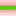

<!doctype html>
<html lang="en">
    <head>
        <meta charset="utf-8">
        <meta http-equiv="X-UA-Compatible" content="IE=edge">
        <meta name="viewport" content="initial-scale=1,user-scalable=no,maximum-scale=1,width=device-width">
        <meta name="mobile-web-app-capable" content="yes">
        <meta name="apple-mobile-web-app-capable" content="yes">
        <link rel="stylesheet" href="css/leaflet.css">
        <link rel="stylesheet" href="css/L.Control.Layers.Tree.css">
        <link rel="stylesheet" href="css/qgis2web.css">
        <link rel="stylesheet" href="css/fontawesome-all.min.css">
        <style>
        html, body, #map {
            width: 100%;
            height: 100%;
            padding: 0;
            margin: 0;
        }
        </style>
        <title></title>
    </head>
    <body>
        <div id="map">
        </div>
        <script src="js/qgis2web_expressions.js"></script>
        <script src="js/leaflet.js"></script>
        <script src="js/L.Control.Layers.Tree.min.js"></script>
        <script src="js/leaflet.rotatedMarker.js"></script>
        <script src="js/leaflet.pattern.js"></script>
        <script src="js/leaflet-hash.js"></script>
        <script src="js/Autolinker.min.js"></script>
        <script src="js/rbush.min.js"></script>
        <script src="js/labelgun.min.js"></script>
        <script src="js/labels.js"></script>
        <script src="data/ProjectAreaWards_2.js"></script>
        <script src="data/ProjectAreaMajorRoads_3.js"></script>
        <script src="data/ke_coral_reefs_4.js"></script>
        <script src="data/ProjectAreaMajorTowns_5.js"></script>
        <script>
        var highlightLayer;
        function highlightFeature(e) {
            highlightLayer = e.target;

            if (e.target.feature.geometry.type === 'LineString' || e.target.feature.geometry.type === 'MultiLineString') {
              highlightLayer.setStyle({
                color: '#ffff00',
              });
            } else {
              highlightLayer.setStyle({
                fillColor: '#ffff00',
                fillOpacity: 1
              });
            }
            highlightLayer.openPopup();
        }
        var map = L.map('map', {
            zoomControl:false, maxZoom:28, minZoom:1
        }).fitBounds([[-4.200760933098263,38.23552728925401],[-1.3816346328274733,44.14177727117416]]);
        var hash = new L.Hash(map);
        map.attributionControl.setPrefix('<a href="https://github.com/tomchadwin/qgis2web" target="_blank">qgis2web</a> &middot; <a href="https://leafletjs.com" title="A JS library for interactive maps">Leaflet</a> &middot; <a href="https://qgis.org">QGIS</a>');
        var autolinker = new Autolinker({truncate: {length: 30, location: 'smart'}});
        // remove popup's row if "visible-with-data"
        function removeEmptyRowsFromPopupContent(content, feature) {
         var tempDiv = document.createElement('div');
         tempDiv.innerHTML = content;
         var rows = tempDiv.querySelectorAll('tr');
         for (var i = 0; i < rows.length; i++) {
             var td = rows[i].querySelector('td.visible-with-data');
             var key = td ? td.id : '';
             if (td && td.classList.contains('visible-with-data') && feature.properties[key] == null) {
                 rows[i].parentNode.removeChild(rows[i]);
             }
         }
         return tempDiv.innerHTML;
        }
        // add class to format popup if it contains media
		function addClassToPopupIfMedia(content, popup) {
			var tempDiv = document.createElement('div');
			tempDiv.innerHTML = content;
			if (tempDiv.querySelector('td img')) {
				popup._contentNode.classList.add('media');
					// Delay to force the redraw
					setTimeout(function() {
						popup.update();
					}, 10);
			} else {
				popup._contentNode.classList.remove('media');
			}
		}
        var zoomControl = L.control.zoom({
            position: 'topleft'
        }).addTo(map);
        var bounds_group = new L.featureGroup([]);
        function setBounds() {
        }
        map.createPane('pane_GoogleSatellite_0');
        map.getPane('pane_GoogleSatellite_0').style.zIndex = 400;
        var layer_GoogleSatellite_0 = L.tileLayer('https://mt1.google.com/vt/lyrs=s&x={x}&y={y}&z={z}', {
            pane: 'pane_GoogleSatellite_0',
            opacity: 1.0,
            attribution: '',
            minZoom: 1,
            maxZoom: 28,
        });
        layer_GoogleSatellite_0;
        map.addLayer(layer_GoogleSatellite_0);
        map.createPane('pane_OSMStandard_1');
        map.getPane('pane_OSMStandard_1').style.zIndex = 401;
        var layer_OSMStandard_1 = L.tileLayer('http://tile.openstreetmap.org/{z}/{x}/{y}.png', {
            pane: 'pane_OSMStandard_1',
            opacity: 1.0,
            attribution: '<a href="https://www.openstreetmap.org/copyright">© OpenStreetMap contributors, CC-BY-SA</a>',
            minZoom: 1,
            maxZoom: 28,
            minNativeZoom: 0,
            maxNativeZoom: 19
        });
        layer_OSMStandard_1;
        map.addLayer(layer_OSMStandard_1);
        function pop_ProjectAreaWards_2(feature, layer) {
            layer.on({
                mouseout: function(e) {
                    for (var i in e.target._eventParents) {
                        if (typeof e.target._eventParents[i].resetStyle === 'function') {
                            e.target._eventParents[i].resetStyle(e.target);
                        }
                    }
                    if (typeof layer.closePopup == 'function') {
                        layer.closePopup();
                    } else {
                        layer.eachLayer(function(feature){
                            feature.closePopup()
                        });
                    }
                },
                mouseover: highlightFeature,
            });
            var popupContent = '<table>\
                    <tr>\
                        <td colspan="2">' + (feature.properties['gid'] !== null ? autolinker.link(feature.properties['gid'].toLocaleString()) : '') + '</td>\
                    </tr>\
                    <tr>\
                        <td colspan="2">' + (feature.properties['pop2009'] !== null ? autolinker.link(feature.properties['pop2009'].toLocaleString()) : '') + '</td>\
                    </tr>\
                    <tr>\
                        <td colspan="2">' + (feature.properties['county'] !== null ? autolinker.link(feature.properties['county'].toLocaleString()) : '') + '</td>\
                    </tr>\
                    <tr>\
                        <td colspan="2">' + (feature.properties['subcounty'] !== null ? autolinker.link(feature.properties['subcounty'].toLocaleString()) : '') + '</td>\
                    </tr>\
                    <tr>\
                        <td colspan="2">' + (feature.properties['ward'] !== null ? autolinker.link(feature.properties['ward'].toLocaleString()) : '') + '</td>\
                    </tr>\
                    <tr>\
                        <td colspan="2">' + (feature.properties['uid'] !== null ? autolinker.link(feature.properties['uid'].toLocaleString()) : '') + '</td>\
                    </tr>\
                    <tr>\
                        <td colspan="2">' + (feature.properties['scuid'] !== null ? autolinker.link(feature.properties['scuid'].toLocaleString()) : '') + '</td>\
                    </tr>\
                    <tr>\
                        <td colspan="2">' + (feature.properties['cuid'] !== null ? autolinker.link(feature.properties['cuid'].toLocaleString()) : '') + '</td>\
                    </tr>\
                    <tr>\
                        <td colspan="2">' + (feature.properties['Country'] !== null ? autolinker.link(feature.properties['Country'].toLocaleString()) : '') + '</td>\
                    </tr>\
                </table>';
            var content = removeEmptyRowsFromPopupContent(popupContent, feature);
			layer.on('popupopen', function(e) {
				addClassToPopupIfMedia(content, e.popup);
			});
			layer.bindPopup(content, { maxHeight: 400 });
        }

        function style_ProjectAreaWards_2_0() {
            return {
                pane: 'pane_ProjectAreaWards_2',
                opacity: 1,
                color: 'rgba(100,152,210,1.0)',
                dashArray: '3.0,6.0',
                lineCap: 'square',
                lineJoin: 'bevel',
                weight: 3.0,
                fillOpacity: 0,
                interactive: false,
            }
        }
        map.createPane('pane_ProjectAreaWards_2');
        map.getPane('pane_ProjectAreaWards_2').style.zIndex = 402;
        map.getPane('pane_ProjectAreaWards_2').style['mix-blend-mode'] = 'normal';
        var layer_ProjectAreaWards_2 = new L.geoJson(json_ProjectAreaWards_2, {
            attribution: '',
            interactive: false,
            dataVar: 'json_ProjectAreaWards_2',
            layerName: 'layer_ProjectAreaWards_2',
            pane: 'pane_ProjectAreaWards_2',
            onEachFeature: pop_ProjectAreaWards_2,
            style: style_ProjectAreaWards_2_0,
        });
        bounds_group.addLayer(layer_ProjectAreaWards_2);
        map.addLayer(layer_ProjectAreaWards_2);
        function pop_ProjectAreaMajorRoads_3(feature, layer) {
            layer.on({
                mouseout: function(e) {
                    for (var i in e.target._eventParents) {
                        if (typeof e.target._eventParents[i].resetStyle === 'function') {
                            e.target._eventParents[i].resetStyle(e.target);
                        }
                    }
                    if (typeof layer.closePopup == 'function') {
                        layer.closePopup();
                    } else {
                        layer.eachLayer(function(feature){
                            feature.closePopup()
                        });
                    }
                },
                mouseover: highlightFeature,
            });
            var popupContent = '<table>\
                    <tr>\
                        <td colspan="2">' + (feature.properties['FNODE_'] !== null ? autolinker.link(feature.properties['FNODE_'].toLocaleString()) : '') + '</td>\
                    </tr>\
                    <tr>\
                        <td colspan="2">' + (feature.properties['TNODE_'] !== null ? autolinker.link(feature.properties['TNODE_'].toLocaleString()) : '') + '</td>\
                    </tr>\
                    <tr>\
                        <td colspan="2">' + (feature.properties['LPOLY_'] !== null ? autolinker.link(feature.properties['LPOLY_'].toLocaleString()) : '') + '</td>\
                    </tr>\
                    <tr>\
                        <td colspan="2">' + (feature.properties['RPOLY_'] !== null ? autolinker.link(feature.properties['RPOLY_'].toLocaleString()) : '') + '</td>\
                    </tr>\
                    <tr>\
                        <td colspan="2">' + (feature.properties['LENGTH'] !== null ? autolinker.link(feature.properties['LENGTH'].toLocaleString()) : '') + '</td>\
                    </tr>\
                    <tr>\
                        <td colspan="2">' + (feature.properties['KENROAD_'] !== null ? autolinker.link(feature.properties['KENROAD_'].toLocaleString()) : '') + '</td>\
                    </tr>\
                    <tr>\
                        <td colspan="2">' + (feature.properties['KENROAD_ID'] !== null ? autolinker.link(feature.properties['KENROAD_ID'].toLocaleString()) : '') + '</td>\
                    </tr>\
                </table>';
            var content = removeEmptyRowsFromPopupContent(popupContent, feature);
			layer.on('popupopen', function(e) {
				addClassToPopupIfMedia(content, e.popup);
			});
			layer.bindPopup(content, { maxHeight: 400 });
        }

        function style_ProjectAreaMajorRoads_3_0() {
            return {
                pane: 'pane_ProjectAreaMajorRoads_3',
                opacity: 1,
                color: 'rgba(244,27,8,1.0)',
                dashArray: '',
                lineCap: 'square',
                lineJoin: 'bevel',
                weight: 1.0,
                fillOpacity: 0,
                interactive: false,
            }
        }
        map.createPane('pane_ProjectAreaMajorRoads_3');
        map.getPane('pane_ProjectAreaMajorRoads_3').style.zIndex = 403;
        map.getPane('pane_ProjectAreaMajorRoads_3').style['mix-blend-mode'] = 'normal';
        var layer_ProjectAreaMajorRoads_3 = new L.geoJson(json_ProjectAreaMajorRoads_3, {
            attribution: '',
            interactive: false,
            dataVar: 'json_ProjectAreaMajorRoads_3',
            layerName: 'layer_ProjectAreaMajorRoads_3',
            pane: 'pane_ProjectAreaMajorRoads_3',
            onEachFeature: pop_ProjectAreaMajorRoads_3,
            style: style_ProjectAreaMajorRoads_3_0,
        });
        bounds_group.addLayer(layer_ProjectAreaMajorRoads_3);
        map.addLayer(layer_ProjectAreaMajorRoads_3);
        function pop_ke_coral_reefs_4(feature, layer) {
            layer.on({
                mouseout: function(e) {
                    for (var i in e.target._eventParents) {
                        if (typeof e.target._eventParents[i].resetStyle === 'function') {
                            e.target._eventParents[i].resetStyle(e.target);
                        }
                    }
                    if (typeof layer.closePopup == 'function') {
                        layer.closePopup();
                    } else {
                        layer.eachLayer(function(feature){
                            feature.closePopup()
                        });
                    }
                },
                mouseover: highlightFeature,
            });
            var popupContent = '<table>\
                    <tr>\
                        <td colspan="2">' + (feature.properties['OUTCROP_RO'] !== null ? autolinker.link(feature.properties['OUTCROP_RO'].toLocaleString()) : '') + '</td>\
                    </tr>\
                </table>';
            var content = removeEmptyRowsFromPopupContent(popupContent, feature);
			layer.on('popupopen', function(e) {
				addClassToPopupIfMedia(content, e.popup);
			});
			layer.bindPopup(content, { maxHeight: 400 });
        }

        function style_ke_coral_reefs_4_0() {
            return {
                pane: 'pane_ke_coral_reefs_4',
                opacity: 1,
                color: 'rgba(106,227,26,1.0)',
                dashArray: '',
                lineCap: 'round',
                lineJoin: 'round',
                weight: 4.0,
                fillOpacity: 0,
                interactive: true,
            }
        }
        map.createPane('pane_ke_coral_reefs_4');
        map.getPane('pane_ke_coral_reefs_4').style.zIndex = 404;
        map.getPane('pane_ke_coral_reefs_4').style['mix-blend-mode'] = 'normal';
        var layer_ke_coral_reefs_4 = new L.geoJson(json_ke_coral_reefs_4, {
            attribution: '',
            interactive: false,
            dataVar: 'json_ke_coral_reefs_4',
            layerName: 'layer_ke_coral_reefs_4',
            pane: 'pane_ke_coral_reefs_4',
            onEachFeature: pop_ke_coral_reefs_4,
            style: style_ke_coral_reefs_4_0,
        });
        bounds_group.addLayer(layer_ke_coral_reefs_4);
        map.addLayer(layer_ke_coral_reefs_4);
        function pop_ProjectAreaMajorTowns_5(feature, layer) {
            layer.on({
                mouseout: function(e) {
                    for (var i in e.target._eventParents) {
                        if (typeof e.target._eventParents[i].resetStyle === 'function') {
                            e.target._eventParents[i].resetStyle(e.target);
                        }
                    }
                    if (typeof layer.closePopup == 'function') {
                        layer.closePopup();
                    } else {
                        layer.eachLayer(function(feature){
                            feature.closePopup()
                        });
                    }
                },
                mouseover: highlightFeature,
            });
            var popupContent = '<table>\
                    <tr>\
                        <th scope="row">TOWN_NAME</th>\
                        <td>' + (feature.properties['TOWN_NAME'] !== null ? autolinker.link(feature.properties['TOWN_NAME'].toLocaleString()) : '') + '</td>\
                    </tr>\
                    <tr>\
                        <th scope="row">Longitude</th>\
                        <td>' + (feature.properties['Longitude'] !== null ? autolinker.link(feature.properties['Longitude'].toLocaleString()) : '') + '</td>\
                    </tr>\
                    <tr>\
                        <th scope="row">Latitude</th>\
                        <td>' + (feature.properties['Latitude'] !== null ? autolinker.link(feature.properties['Latitude'].toLocaleString()) : '') + '</td>\
                    </tr>\
                    <tr>\
                        <td colspan="2">' + (feature.properties['Photo'] !== null ? '' : '') + '</td>\
                    </tr>\
                </table>';
            var content = removeEmptyRowsFromPopupContent(popupContent, feature);
			layer.on('popupopen', function(e) {
				addClassToPopupIfMedia(content, e.popup);
			});
			layer.bindPopup(content, { maxHeight: 200 });
        }

        function style_ProjectAreaMajorTowns_5_0() {
            return {
                pane: 'pane_ProjectAreaMajorTowns_5',
                radius: 9.2,
                opacity: 1,
                color: 'rgba(83,83,83,1.0)',
                dashArray: '',
                lineCap: 'butt',
                lineJoin: 'miter',
                weight: 2.0,
                fill: true,
                fillOpacity: 1,
                fillColor: 'rgba(233,6,6,1.0)',
                interactive: true,
            }
        }
        map.createPane('pane_ProjectAreaMajorTowns_5');
        map.getPane('pane_ProjectAreaMajorTowns_5').style.zIndex = 405;
        map.getPane('pane_ProjectAreaMajorTowns_5').style['mix-blend-mode'] = 'normal';
        var layer_ProjectAreaMajorTowns_5 = new L.geoJson(json_ProjectAreaMajorTowns_5, {
            attribution: '',
            interactive: true,
            dataVar: 'json_ProjectAreaMajorTowns_5',
            layerName: 'layer_ProjectAreaMajorTowns_5',
            pane: 'pane_ProjectAreaMajorTowns_5',
            onEachFeature: pop_ProjectAreaMajorTowns_5,
            pointToLayer: function (feature, latlng) {
                var context = {
                    feature: feature,
                    variables: {}
                };
                return L.circleMarker(latlng, style_ProjectAreaMajorTowns_5_0(feature));
            },
        });
        bounds_group.addLayer(layer_ProjectAreaMajorTowns_5);
        map.addLayer(layer_ProjectAreaMajorTowns_5);
        var baseMaps = {};
        var overlaysTree = [
            {label: ' Project Area Major Towns', layer: layer_ProjectAreaMajorTowns_5},
            {label: ' ke_coral_reefs', layer: layer_ke_coral_reefs_4},
            {label: ' Project Area Major Roads', layer: layer_ProjectAreaMajorRoads_3},
            {label: ' Project Area Wards', layer: layer_ProjectAreaWards_2},
            {label: "OSM Standard", layer: layer_OSMStandard_1},
            {label: "Google Satellite", layer: layer_GoogleSatellite_0},]
        var lay = L.control.layers.tree(null, overlaysTree,{
            //namedToggle: true,
            //selectorBack: false,
            //closedSymbol: '&#8862; &#x1f5c0;',
            //openedSymbol: '&#8863; &#x1f5c1;',
            //collapseAll: 'Collapse all',
            //expandAll: 'Expand all',
            collapsed: false, 
        });
        lay.addTo(map);
        setBounds();
        var i = 0;
        layer_ProjectAreaWards_2.eachLayer(function(layer) {
            var context = {
                feature: layer.feature,
                variables: {}
            };
            layer.bindTooltip((layer.feature.properties['ward'] !== null?String('<div style="color: #323232; font-size: 4pt; font-family: \'Arial\', sans-serif;">' + layer.feature.properties['ward']) + '</div>':''), {permanent: true, offset: [-0, -16], className: 'css_ProjectAreaWards_2'});
            labels.push(layer);
            totalMarkers += 1;
              layer.added = true;
              addLabel(layer, i);
              i++;
        });
        var i = 0;
        layer_ProjectAreaMajorTowns_5.eachLayer(function(layer) {
            var context = {
                feature: layer.feature,
                variables: {}
            };
            layer.bindTooltip((layer.feature.properties['TOWN_NAME'] !== null?String('<div style="color: #ee0c0c; font-size: 8pt; font-weight: bold; font-family: \'Arial\', sans-serif;">' + layer.feature.properties['TOWN_NAME']) + '</div>':''), {permanent: true, offset: [-0, -16], className: 'css_ProjectAreaMajorTowns_5'});
            labels.push(layer);
            totalMarkers += 1;
              layer.added = true;
              addLabel(layer, i);
              i++;
        });
        resetLabels([layer_ProjectAreaWards_2,layer_ProjectAreaMajorTowns_5]);
        map.on("zoomend", function(){
            resetLabels([layer_ProjectAreaWards_2,layer_ProjectAreaMajorTowns_5]);
        });
        map.on("layeradd", function(){
            resetLabels([layer_ProjectAreaWards_2,layer_ProjectAreaMajorTowns_5]);
        });
        map.on("layerremove", function(){
            resetLabels([layer_ProjectAreaWards_2,layer_ProjectAreaMajorTowns_5]);
        });
        </script>
    </body>
</html>
